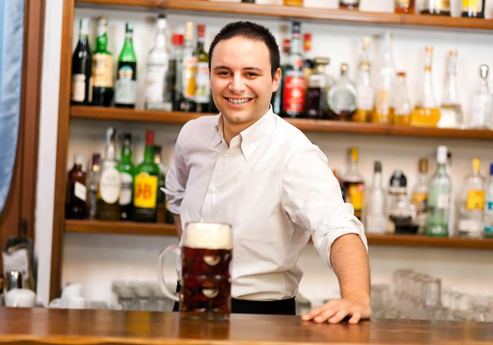
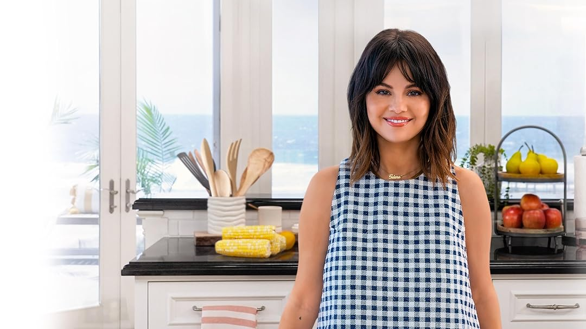
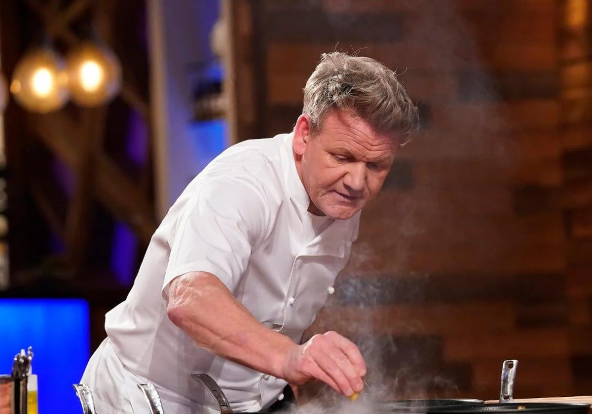
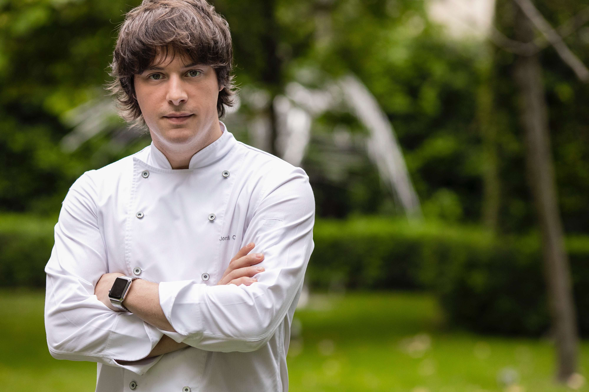
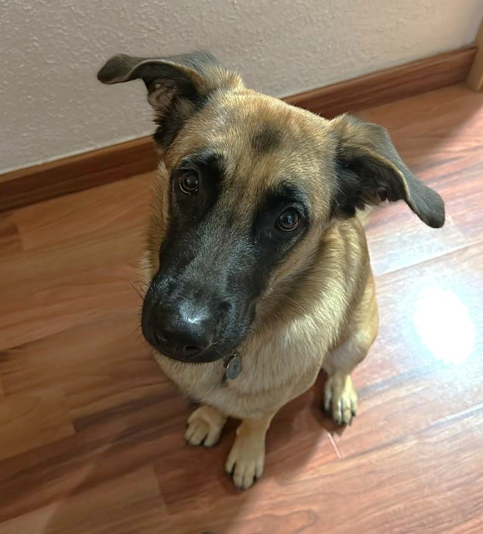
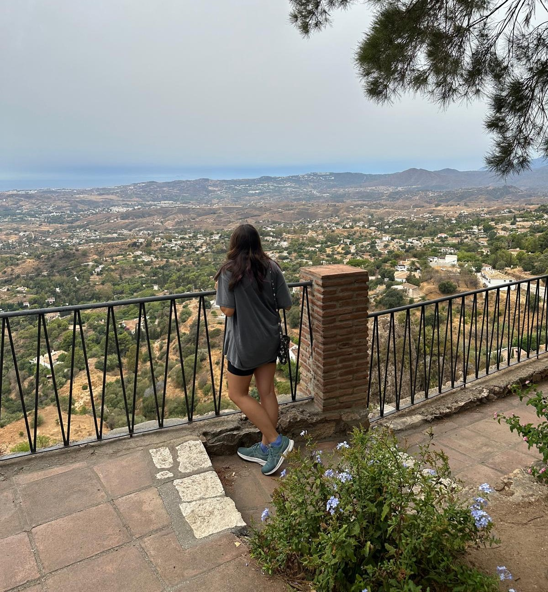
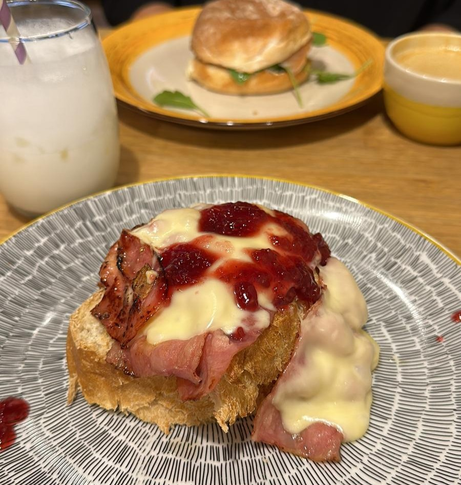

Un poco de música mientras conoces a nuestro equipo:
NUESTROS CAMAREROS
Luisa
Francisco
Gabriel
NUESTROS COCINEROS
Juana
Jorge
Pedro
NUESTRA DESARROLLADORA WEB
Atún
Yo
Comidilla
Me presento...
Me gustan mucho los animales, sobretodo los perrillos. Mi perrilla, que sale en la
primera foto, se llama Atún y tiene solo un añito. También me gusta mucho viajar, y por ahora mi lugar
favorito de los que he ido ha sido Memmingen, Alemania. También me gusta mucho cocinar y comer, aunque
la tostada de la foto no la he hecho yo.
Otros hobbies que tengo son ir al gym, ver series y tatuar. Mi color favorito es el amarillo y mi número
favorito el 7. Antes de este grado, hice un año y un poquito de Química, pero el sistema educativo universitario
no me motivaba y me metí aquí por probar suerte ya que luego el mundo laboral pinta muy bien. Afortunadamente me
ha gustado mucho :)